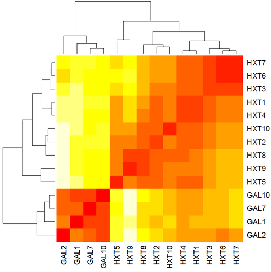

Méthodes bayésiennes pour l'analyse génétique
Offre de thèse en traitement statistique du signal
L'équipe Signal et Communications du laboratoire IRIT propose actuellement un sujet de thèse en traitement statistique du signal. Les candidats intéressés sont invités à entrer en contact avec :
- Jean-Yves Tourneret : jean-yves [dot] tourneret [at] enseeiht [dot] fr
- Nicolas Dobigeon : nicolas [dot] dobigeon [at] enseeiht [dot] fr
Collaborations
Une collaboration avec l'équipe du Prof. Alfred Hero (Université du Michigan) est envisagée pour la conduite de cette thèse. La qualité des recherches menées par le Prof. Hero dans le domaine de la biostatistique sera un appui conséquent. Les méthodes développées pourront être évaluées sur des signaux réels et expertisés, collectés lors d'une étude épidémiologique récente (2008) menée sur des patients volontaires.
Cette étude s'inscrira dans le programme DARPA Predicting Health and Disease (PHD), qui finance en partie les recherches de l'équipe du Prof. Hero. Les collaborateurs pour ce projet sont :
- Dr. Geoffrey S. Ginsburg (Duke Institute for Genome Sciences and Policy, Duke University),
- Prof. Alfred O. Hero (Department of Electrical Engineering and Computer Science, University of Michigan),
- COL Geoffrey Ling (DARPA).
Résumé
Ces dernières années, la génomique a connu un intérêt scientifique grandissant, notamment depuis la publication complète des cartes du génome humain au début des années 2000. A présent, les équipes médicales sont confrontées à un nouvel enjeu : l'exploitation des signaux délivrés par les puces ADN. Ces signaux, souvent de grande taille, permettent de connaître à un instant donné quel est le niveau d'expression des gênes dans un tissus considéré. Ainsi, afin de détecter, voire de prévenir, une maladie chez un groupe de patients observés, il est nécessaire de proposer des méthodes innovantes d'analyse de l'information fournie par ces biopuces.
Fig. 1. Correlation matrix of 14 structural genes with clustering dendrogram.
[D. Zhu et al., Bioinformatics, 2007]
Un problème important est l'identification de séquences temporelles dans l'expression des différents gènes qui sont caractéristiques d'une pathologie. Pour identifier ces signatures biologiques, les solutions les plus prometteuses reposent sur des techniques de réduction de dimension qui consiste à décomposer les signaux en marqueurs élémentaires selon un modèle de mélange linéaire. L'analyse en composantes principales, l'analyse en composantes indépendantes, et l'apprentissage de variétés sont des exemples courants de ces techniques. Nous nous proposons dans cette thèse de développer des algorithmes de décomposition reposant sur une estimation conjointe des marqueurs et de leurs niveaux d'expression. Le travail s'appuiera sur l'expérience de l'équipe SC en modélisation statistique bayésienne, ainsi que sur l'utilisation de méthodes de simulation stochastique qui ont déjà démontré leur intérêt pour d'autres applications (imagerie hyperspectrale notamment). Lors de l'analyse de données ADN, l'un des verrous scientifiques majeurs réside dans la grande dimension des signaux à traiter. Un intérêt tout particulier sera donc porté au développement de méthodes de réduction de dimensionnalité appropriées (analyse parcimonieuse par exemple).
Profil recherché
Les connaissances requises pour ce sujet portent essentiellement sur le traitement statistique du signal (estimation, détection). Des connaissances en analyse de signaux multivariés (de grande dimension) seront appréciées.